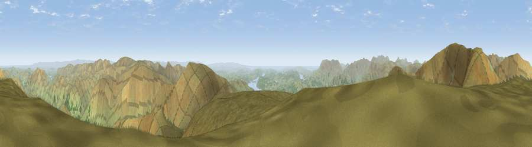

Viewpoint near Rydal
#1124 in England · top 8% of its area beats it · near RydalThe view, rendered

A 360° render of this exact spot computed from the terrain model, tree cover and land cover — summer colours, afternoon light, calibrated against photographs of famous viewpoints. Real trees, hedges and buildings will differ in detail.
The panorama
Grey silhouette: terrain skyline in each direction (720 bearings, Earth curvature and refraction included). Dashed green: skyline with trees (+15 m) and buildings (+8 m) as obstacles. Blue strip: how far the ground is visible on each bearing.
Where the view opens
Wedge length = distance to the farthest visible ground on that bearing (vegetation-aware). Rings at 10, 25 and 50 km.
What fills the view
93% grassland · 5% woodland · 1% water
Angular shares of the visible panorama (visual magnitude), not map area. Landscape diversity 0.13 (0–1 Shannon).
Key numbers
More beautiful places nearby
The staircase of upgrades: each row has a higher view potential than everything closer. Driving times are estimates from straight-line distance, calibrated against real road routing — check an actual route before setting out.
| Place | Direction | Drive | Score |
|---|---|---|---|
| Viewpoint near Grasmere | NW · 1 km | ~3 min | 80.7 |
| Fairfield | NW · 2 km | ~5 min | 81.0 |
| High Crag | NW · 4 km | ~10 min | 81.8 |
| Viewpoint near Legburthwaite | NW · 6 km | ~12 min | 83.8 |
| Viewpoint near Legburthwaite | NW · 7 km | ~14 min | 84.5 |
| Old Man of Coniston | SW · 16 km | ~29 min | 85.2 |
| Pillar | W · 20 km | ~34 min | 86.8 |
| Illgill Head | WSW · 22 km | ~36 min | 88.4 |
54.48574, -2.96701 · source: screening · position refined by local search. Computed location — check access rights before visiting.